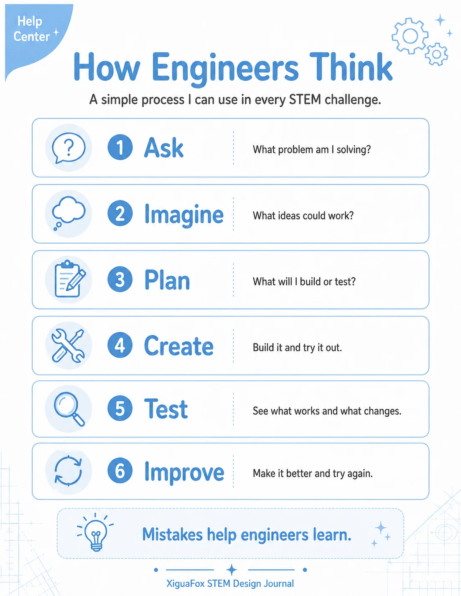
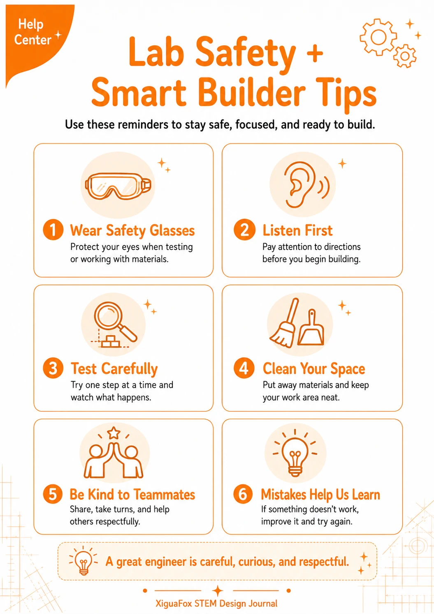
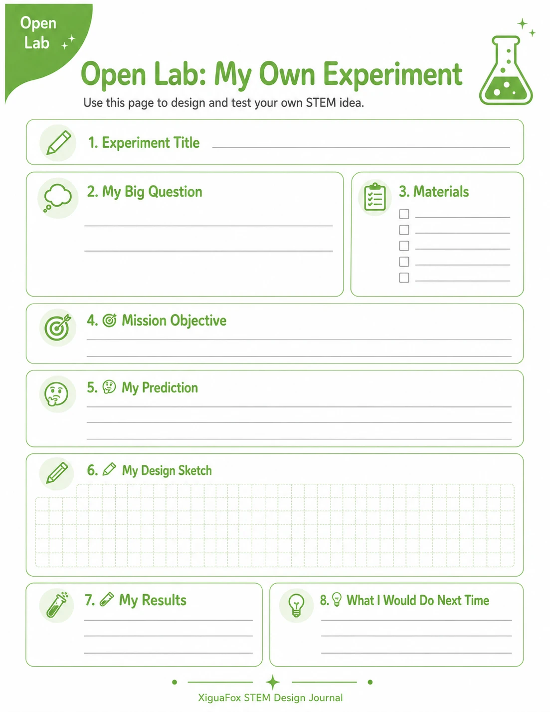
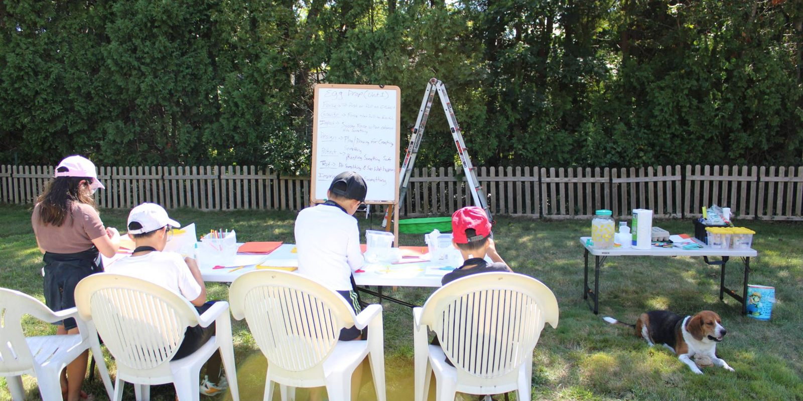
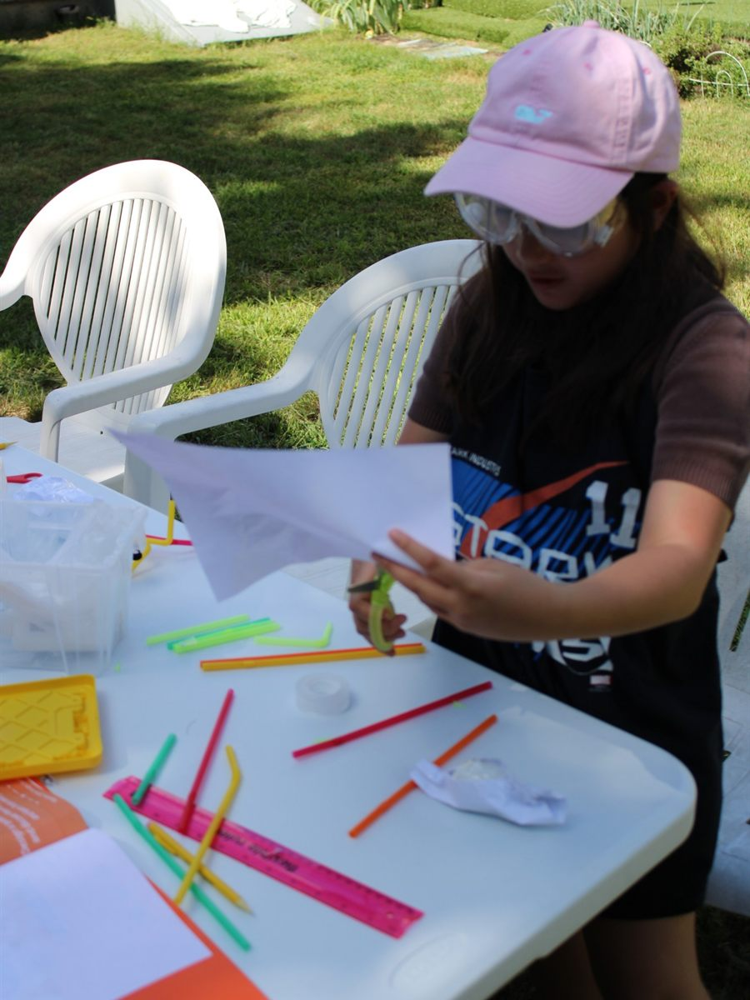
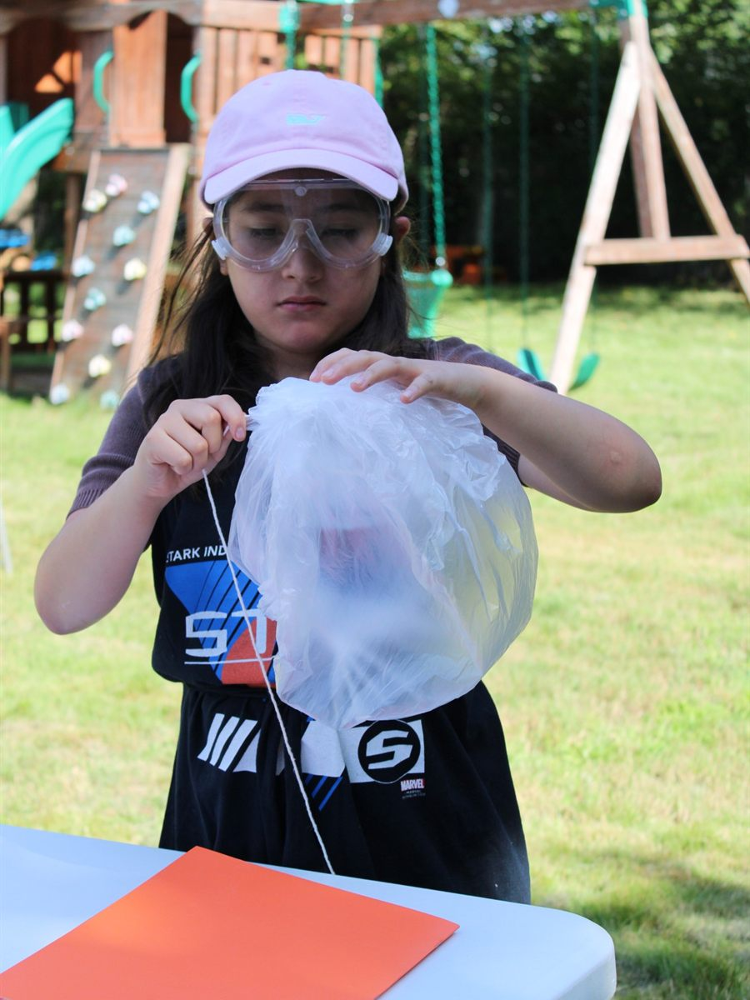
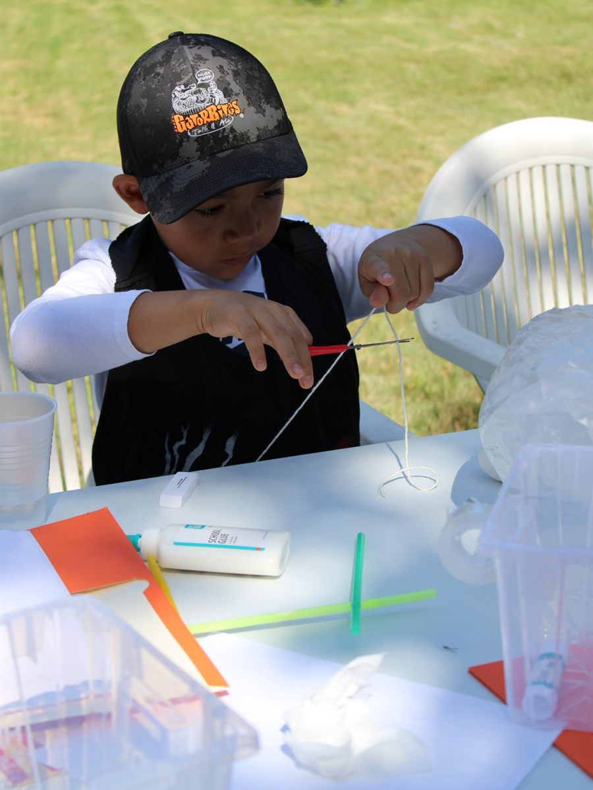

Hands-on STEAM challenges that help elementary and middle-school students think, design, build, test, and improve.
Role
Founder & Lead STEAM Instructor
Audience
Elementary & middle-school learners
Format
90-minute workshops or a 6-week series
Museum Debut
Oct 2026 · Rhode Island Computer Museum
Status
Monthly museum workshops
Overview
The XiguaFox STEAM Design Program is a structured, hands-on learning experience that introduces students to science, technology, engineering, art, and mathematics through engaging challenges and experiments. In every challenge, students work through the same repeatable design process: learn a concept, plan an approach, build or experiment, test their ideas, and improve their results.
Each challenge comes with a student STEAM Design Journal and instructor lesson materials, so the experience stays consistent wherever it's delivered: classrooms, after-school programs, camps, museums, and community programs. The program travels to the hosting school or organization, and I bring the activities, materials, safety equipment, setup, and cleanup. I lead each workshop with my classroom assistant, Yanci Tong.
Education has been a passion of mine for a long time. As a Combat Instructor in the Marine Corps, I instructed more than 8,000 Marine officers, and as a product leader I managed 30+ digital solutions across 16 states. Both taught me how to turn complex challenges into engaging, well-structured experiences.
XiguaFox brings those skills into the classroom, drawing on my background in technology and product development and what I've learned in graduate school, to help young learners imagine, experiment, build, and discover what's possible.
How It Works
Every workshop follows the same six-step learning and design process, so students practice the same way of thinking in every challenge, whether they're building a bridge or extracting DNA.
Discover a STEAM concept, ask questions, and make observations.
Develop ideas, make predictions, and sketch possible solutions.
Build, experiment, investigate, or create something new.
Observe results, collect evidence, and compare with predictions.
Refine and iterate, using what they learned to adjust designs or test new ideas.
Record observations, explain discoveries, and consider what to explore next.
Every Student Gets One
Each workshop includes an individual STEAM Design Journal that guides students through the process. They use it to record their ideas, plan their designs, document their results, and reflect on what they learned.
The journal goes home with the student, so it becomes a lasting record of discovery and a tangible takeaway for parents and caregivers.



Inside a Session
Every challenge has an instructor timeline that lays out what happens, what materials each student needs, and what each step is meant to teach. Unit 1: Egg Drop is where it all started. I first ran it as a demo in my own backyard, before taking the program to the museum.
Students design a system to protect an egg from a drop, in a two-round build, test, and improve challenge.




Think · Build · Test · Improve
The program offers a growing collection of hands-on activities across eight learning categories. Workshop availability and recommended grade levels vary by activity.
Design, build, and test creative solutions to real-world challenges.
Explore creativity, visual design, and artistic expression.
Investigate materials, mixtures, and chemical reactions.
Discover living organisms, ecosystems, and biological systems.
Explore mechanisms, movement, and automation.
Discover computational thinking, logic, and emerging technology.
Experiment with circuits, sensors, and electricity.
Investigate fundamental forces, motion, and energy.
The current collection
At the Museum
After the backyard demo, I brought the program to the Rhode Island Computer Museum with a 90-minute, hands-on life science workshop that included journal pages and three activities.
Extract DNA you can see.
Build and test a listening tool.
See your pulse in action.
Outcome: after this first museum workshop, the museum invited the program back to offer monthly STEAM workshops for students.
What Students Take Away
Flexible by Design
Workshops run for schools, libraries, museums, and community programs, with a recommended group size of 8–24 students depending on the activity and age group.
90 minutes · 1–3 activities
Six weekly 90-minute sessions
Reflection
I built XiguaFox the way I'd build a product, with the same attention to the people using it and the system behind it.
Every activity follows the same six steps, so students practice one way of thinking across chemistry, robotics, art, and everything in between.
Journals, instructor lesson plans, timelines, and materials are organized around each challenge, so a workshop runs the same in a classroom, a camp, or a museum.
Two-round challenges like the Egg Drop make failure part of the plan. In the journal's words: mistakes help engineers learn.
Students build and discover, hosts get setup and cleanup handled, and the journal goes home so parents and caregivers can see what their child learned.
New activities plug into the same structure, so the program can keep expanding into additional STEM and STEAM units.
What's Next
Monthly workshops at the Rhode Island Computer Museum are the next step, and the program is built to keep growing into new units and new places: schools, libraries, museums, and community programs.
Tell me about your group, your dates, and the activities you're interested in.